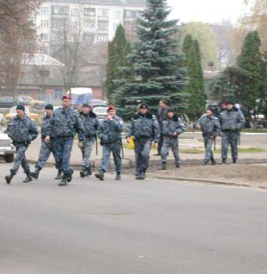

З газети Панорама
http://rama.com.ua/?dst=news_content&a=show&id=58&sch=1-2-40-41|
 |
Сегодня около 12.00 около здания Ковпаковского суда сотрудники "Беркута" расчищали себе дорогу дубинками и слезоточивым газом. В результате пострадали 15 горожан. Четверо - обратились в больницы за помощью. Журналист "Данкора" Владислав Ивченко написал заявление в милицию по факту избиения. Инциденту предшествовали заседания Ковпаковского суда заседание в отношении горожан, которых милиция задерживала в ночь выборов около избирательного участка №46 (помещение ВНИИ "Компрессормаш"), а потом отпустила. На них были составлены протоколы об административных правонарушениях. Как сообщил юрист общественного бюро "Правозазист" Александр Такул, сегодня с 6.00 утра их по решению суда доставляли в суд милиционеры. Некоторых - в наручниках. "Ни адвокатов, ни журналистов, ни родственников задержанных на заседание не пустили. Два милиционера на входе сообщали, что заседание закрытое, хотя соответствующего решения суда никто не видел", - сказал он. Поэтому невозможно сказать точно, в чем именно сегодня обвиняли этих людей. Как сообщи единственный человек, не взятый под стражу Евгений Петруня, их обвиняли в противодействии милиции в ночь выборов. Родственники и общественность стояли около здания суда с 10.00. Около 12.00 из здания вывели одного за одним двух осужденных в сопровождении милиции. Увидев, что людей около здания становиться все больше, они видимо, решили остальных вывозить. Во двор суда заехал автомобиль УАЗ. |
Александр Такул отметил, что после этого к зданию суда начали подтягиваться милиционеры из расположенного поблизости райотдела милиции. Вскоре к суду подошли и сотрудники "Беркута".
По словам очевидцев, когда из здания в закрытой машине стали вывозить задержанных, собравшиеся попытались этому воспрепятствывать. Некоторые родственники легли на асфальт, чтобы машина не проехала.
"После этого один из людей в гражданском, видимо руководитель подразделения "Беркута" отдал приказ атаковать. "Достать дубинки", - крикнул он.
После этого сотрудники "Беркута" сначала распылили в лицо людей слезоточивый газ, а потом начали бить собравшихся дубинками, чтобы расчистить дорогу автомобилю.
В результате пострадали около 15 человек. Четверо госпитализированы, их жизнь вне опасности. Остальные отказались от медицинской помощи. Среди госпитализированных студент Сумского государственного университета Максим Минаев, его отец Геннадий Минаев, отец одного из осужденных Набиев. Его сын Виталий Набиев - водитель такси - в ночь выборов просто остановил машину и вышел поинтересоваться, не нужна ли помощь. Но также был задержан, а теперь и осужден на 10 суток. Правосудие над всеми десятью горожанами осуществлял Вадим Рыков, недавно ставший судьей Ковпаковского суда. Вадим Рыков - один из приближенных главы Сумской государственной администрации Владимира Щербаня.
Среди пострадавших оказался журналист сумской газеты "Данкор" Вячеслав Ивченко, который после инцидента написал в Ковпаковский райотдел милиции заявление по факту избиения сотрудниками милиции. По словам Владислава, милиция не обращала внимание на то, что он журналист: "Я ему показываю журналистское удостоверение, а сотрудник "Беркута" меня бьет и кричит "уйди".
В 15.00 на площади Независимости должен состояться массовый митинг протеста.
Удалось получить комментарий Центра общественных связей УМВД в Сумской области.
"13 ноября в 9.00 Ковпаковский районный суд г. Сумы рассматривал дело о привлечении к административной ответственности 6 граждан - жителей г. Сумы за нарушения, предусмотренные ст.185 Кодекса об административных правонарушениях. Эти люди в ночь с 31 октября на 1 ноября нарушили общественный порядок и оказали неповиновение законным требованиям сотрудников милиции на одном из избирательных участков города. Согласно решению суда на основании ст. 227, 279, 280, 283, 284, 185 Кодекса об административных правонарушениях к правонарушителям было применено административное взыскание в виде административного ареста на 10 суток. Одного несовершеннолетнего, решением суда, передали под наблюдение матери. Когда правонарушителей помещали в специальный автомобиль около административного здания суда собралась толпа граждан в количестве 100 человек. При попытке машины выехать со двора суда толпа начала раскачивать автозак, некоторые граждане ложились на проезжую часть под колеса автомобилей.
Таким образом они мешали движению конвойного автомобиля с административно арестованными и выполнению решения суда, создавая опасность нападения на конвой. Чтобы недопустить нападение на конвой и прекратить противоправные действия сотрудниками милиции были применены спецсредства. Телесные повреждения получили 2 сотрудника следственно-оперативной группы, которые обратились за помощью в больницу. Событие зарегистрировано. Идет проверка Ковпаковским райотделом милиции", - сказано в сообщении ЦОС.
Створений : system.
останні зміни: Неділя 14 з November, 2004 23:37:58 JST dmytro.
Оригінал документу знаходиться на http://tiki/tiki/tiki-index.php?page=%D0%97%20%D0%B3%D0%B0%D0%B7%D0%B5%D1%82%D0%B8%20%D0%9F%D0%B0%D0%BD%D0%BE%D1%80%D0%B0%D0%BC%D0%B0